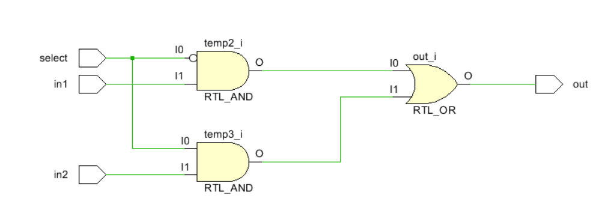

基础逻辑门
Verilog HDL 简介
Verilog HDL 设计语言支持 3 种设计风格：门级，数据流级和行为级。门级和数据流级设计风格通常用于 设计组合逻辑电路，而行为级设计风格既可以用于设计组合逻辑电路又可以设计时序逻辑电路。本次实验 通过使用 Vivado 2015.1 软件工具，以 Basys3 和 Nexys4 DDR 开发板为目标板，设计简单的组合逻辑电路来 展示 3 种设计风格的用法。请参考 Vivado 手册了解如何使用 Vivado 工具创建工程并验证数字电路。
Nexys4 DDR 简介
Nexys4 DDR 特性如下：(译者注：开发板各批次参数不同，仅供参考
- 128 MiB DDR 2 SDRAM
- 16Mbytes SPI (quad 模式) PCM 非易失型存储器
- 16Mbytes 并行 PCM 非易失型存储器
- 10/100 以太网 PHY
- USB-UART 和 USB-HID 端口 (用于鼠标和键盘)
- 8-bit VGA 端口
- 100MHz CMOS 振荡器
- 72 个 I/O 连接到扩展连接器
- GPIO 包括 8 个 LED，5 个按键开关，8 个拨码开关和 2 个 4 位 7 段数码管
Nexys4 DDR 开发板如下图所示
门级建模
Verilog HDL 支持内建的原始的门级设计。门级支持包括多输入、多输出、三态和拉态。多输入门支持包括：and, nand, or, nor, xor, 和 xnor，它们的输入为 2 个及以上，输出只有 1 个。多输出门支持包括 buf 和 not，它们的输出为 2 个及以上，输入只有 1 个。Verilog HDL 语言还支持三态门：bufif0, bufif1, notif0, 和 notif1。这些三态门有一个输入，一个控制信号和一个输出。拉门支持包括
pullup 和 pulldown，只有一个输出（没有输入）。这些门的零延迟的基本语法如下：
and | nand | or | nor | xor | xnor [instance name] (out, in1, …, inN); // [] is optional and | is selection
buf | not [instance name] (out1, out2, …, out2, input);
bufif0 | bufif1 | notif0 | notif1 [instance name] (outputA, inputB, controlC);
pullup | pulldown [instance name] (output A);
你也可以在同一语句中，用逗号分隔，创建多个相同类型门的实例，比如：
Verilog HDL 语言也允许在实例化门电路时加入延迟。加入的延迟来自输入或输出。这些延迟可以表达为上升、下降或关断延迟；在一个实例中可以使用 1、2 或 3 种延迟。关断延迟可以用于输出能被关掉的门 (如 notif1). 比如，
and #5 A1(Out, in1, in2); // the rise and fall delays are 5 units
and #(2,5) A2(out2, in1, in2); // the rise delay is 2 unit and the fall delay is 5
units notif1 #(2, 5, 4) A3(out3, in2, ctrl1); //the rise delay is 2, the fall delay is 5, and the turn- off delay is 4 unit
实验目标
完成本次实验后，你将有能力：
- 使用门级、数据流级和行为级 3 种风格设计一位和多位组合逻辑电路
- 设计模型读取拨码开关和按键开关并输出到 LED 和 7 段数码管
- 仿真并理解设计的输出
- 创建分层的设计
- 综合，实现并生成比特流文件
- 下载比特流文件到开发板，并验证功能
使用门级建模风格设计 2-to-1 多路选择器并下载验证结果
由我们数字电路课本的知识我们知道一个 2-to-1 多路选择器的电路大致如下如所示：

实验步骤
-
打开 Vivado 并创建空白工程，取名为 lab1.1 (参考 Vivado2015.1 手册 Step 1)。

创建文件 create file
添加 xdc 文件
选择配置文件

-
使用门级建模风格创建 Verilog module 包含 3 个输入 (in1,in2,select) 和 1 个输出 (out) (参考 Vivado2015.1 手册 Step 1).
提示：单击在 New Project 窗口，Add Source 上的绿色加号按钮。然后单击 Create File。修改文件名为 lab1_1_1，单击 OK。确认目标语言和仿真语言都设置为 Verilog。单击两次 Next。
-
将适合开发板的 XDC 文件添加到工程。
提示：单击在 New Project 窗口 Add Constraints 上的绿色加号按钮。单击 AddFile.选择 Basys3_Master.xdc (Basys3) 或 Nexys4DDR_Master.xdc (Nexys4 DDR)。点击 Next。
-
在 New Project 窗口选择 xc7a35tcpg236-1(Basys3) 或 xc7a100tcsg324-1(Nexys4 DDR)。单击 Next。单击 Finish。
-
一个定义 Module 的窗口会出现，通过单击 Port Name 并输入变量名，创建 3 个输入 (in1, in2, select) 和 1 个输出 (out) 。通过单击下拉列表选择正确的方向修改 Direction。单击 OK.
-
打开 lab1.1.v 文件编辑其中内容。在分号 (;) 后添加上文电路的结构逻辑。选择 File > Save File 或 CRTL-S 保存。
-
单击 RTL Analysis 上的 Elaborated Design 选项卡。
- 单击 Schematic 查看门级建模的设计。
参考代码和门级建模的设计
我们可以使用门级建模的方式写，verilog 的代码如下：
module lab1_1(
input in1,in2,
input select,
output out
);
wire temp1,temp2,temp3;
not (temp1,select);
and (temp2,temp1,in1);
and (temp3,select,in2);
or (out,temp2,temp3);
endmodule
点击 Schematic 查看门级建模的设计

我们可以看到大致如下的电路：

由此我们可以知道我们设计的门级建模的确是对的。
编辑 XDC 文件。去注释并将 SW0 和 SW1 赋给 in1 和 in2, SW7 给 select, LED0 给 out。保存 XDC 文件。生成比特流文件，将其下载到 Basys3 或 Nexys4 DDR 开发板，并验证功能
打开 xdc 文件

修改 xdc 文件对应段落：
set_property -dict { PACKAGE_PIN J15 IOSTANDARD LVCMOS33 } [get_ports { in1 }]; #IO_L24N_T3_RS0_15 Sch=sw[0]
set_property -dict { PACKAGE_PIN L16 IOSTANDARD LVCMOS33 } [get_ports { in2 }]; #IO_L3N_T0_DQS_EMCCLK_14 Sch=sw[1]
#set_property -dict { PACKAGE_PIN M13 IOSTANDARD LVCMOS33 } [get_ports { sw[2] }]; #IO_L6N_T0_D08_VREF_14 Sch=sw[2]
#set_property -dict { PACKAGE_PIN R15 IOSTANDARD LVCMOS33 } [get_ports { sw[3] }]; #IO_L13N_T2_MRCC_14 Sch=sw[3]
#set_property -dict { PACKAGE_PIN R17 IOSTANDARD LVCMOS33 } [get_ports { sw[4] }]; #IO_L12N_T1_MRCC_14 Sch=sw[4]
#set_property -dict { PACKAGE_PIN T18 IOSTANDARD LVCMOS33 } [get_ports { sw[5] }]; #IO_L7N_T1_D10_14 Sch=sw[5]
#set_property -dict { PACKAGE_PIN U18 IOSTANDARD LVCMOS33 } [get_ports { sw[6] }]; #IO_L17N_T2_A13_D29_14 Sch=sw[6]
set_property -dict { PACKAGE_PIN R13 IOSTANDARD LVCMOS33 } [get_ports { select }]; #IO_L5N_T0_D07_14 Sch=sw[7]
#set_property -dict { PACKAGE_PIN T8 IOSTANDARD LVCMOS18 } [get_ports { sw[8] }]; #IO_L24N_T3_34 Sch=sw[8]
#set_property -dict { PACKAGE_PIN U8 IOSTANDARD LVCMOS18 } [get_ports { sw[9] }]; #IO_25_34 Sch=sw[9]
#set_property -dict { PACKAGE_PIN R16 IOSTANDARD LVCMOS33 } [get_ports { sw[10] }]; #IO_L15P_T2_DQS_RDWR_B_14 Sch=sw[10]
#set_property -dict { PACKAGE_PIN T13 IOSTANDARD LVCMOS33 } [get_ports { sw[11] }]; #IO_L23P_T3_A03_D19_14 Sch=sw[11]
#set_property -dict { PACKAGE_PIN H6 IOSTANDARD LVCMOS33 } [get_ports { sw[12] }]; #IO_L24P_T3_35 Sch=sw[12]
#set_property -dict { PACKAGE_PIN U12 IOSTANDARD LVCMOS33 } [get_ports { sw[13] }]; #IO_L20P_T3_A08_D24_14 Sch=sw[13]
#set_property -dict { PACKAGE_PIN U11 IOSTANDARD LVCMOS33 } [get_ports { sw[14] }]; #IO_L19N_T3_A09_D25_VREF_14 Sch=sw[14]
#set_property -dict { PACKAGE_PIN V10 IOSTANDARD LVCMOS33 } [get_ports { sw[15] }]; #IO_L21P_T3_DQS_14 Sch=sw[15]
## LEDs
set_property -dict { PACKAGE_PIN H17 IOSTANDARD LVCMOS33 } [get_ports { out }]; #IO_L18P_T2_A24_15 Sch=led[0]
# set_property -dict { PACKAGE_PIN K15 IOSTANDARD LVCMOS33 } [get_ports { led[1] }]; #IO_L24P_T3_RS1_15 Sch=led[1]
# set_property -dict { PACKAGE_PIN J13 IOSTANDARD LVCMOS33 } [get_ports { led[2] }]; #IO_L17N_T2_A25_15 Sch=led[2]
# set_property -dict { PACKAGE_PIN N14 IOSTANDARD LVCMOS33 } [get_ports { led[3] }]; #IO_L8P_T1_D11_14 Sch=led[3]
# set_property -dict { PACKAGE_PIN R18 IOSTANDARD LVCMOS33 } [get_ports { led[4] }]; #IO_L7P_T1_D09_14 Sch=led[4]
# set_property -dict { PACKAGE_PIN V17 IOSTANDARD LVCMOS33 } [get_ports { led[5] }]; #IO_L18N_T2_A11_D27_14 Sch=led[5]
# set_property -dict { PACKAGE_PIN U17 IOSTANDARD LVCMOS33 } [get_ports { led[6] }]; #IO_L17P_T2_A14_D30_14 Sch=led[6]
# set_property -dict { PACKAGE_PIN U16 IOSTANDARD LVCMOS33 } [get_ports { led[7] }]; #IO_L18P_T2_A12_D28_14 Sch=led[7]
#set_property -dict { PACKAGE_PIN V16 IOSTANDARD LVCMOS33 } [get_ports { led[8] }]; #IO_L16N_T2_A15_D31_14 Sch=led[8]
#set_property -dict { PACKAGE_PIN T15 IOSTANDARD LVCMOS33 } [get_ports { led[9] }]; #IO_L14N_T2_SRCC_14 Sch=led[9]
#set_property -dict { PACKAGE_PIN U14 IOSTANDARD LVCMOS33 } [get_ports { led[10] }]; #IO_L22P_T3_A05_D21_14 Sch=led[10]
#set_property -dict { PACKAGE_PIN T16 IOSTANDARD LVCMOS33 } [get_ports { led[11] }]; #IO_L15N_T2_DQS_DOUT_CSO_B_14 Sch=led[11]
#set_property -dict { PACKAGE_PIN V15 IOSTANDARD LVCMOS33 } [get_ports { led[12] }]; #IO_L16P_T2_CSI_B_14 Sch=led[12]
#set_property -dict { PACKAGE_PIN V14 IOSTANDARD LVCMOS33 } [get_ports { led[13] }]; #IO_L22N_T3_A04_D20_14 Sch=led[13]
#set_property -dict { PACKAGE_PIN V12 IOSTANDARD LVCMOS33 } [get_ports { led[14] }]; #IO_L20N_T3_A07_D23_14 Sch=led[14]
#set_property -dict { PACKAGE_PIN V11 IOSTANDARD LVCMOS33 } [get_ports { led[15] }]; #IO_L21N_T3_DQS_A06_D22_14 Sch=led[15]
数据流级建模
数据流级建模风格主要用于描述组合逻辑电路。一种基本的手法就是使用持续赋值 (continuous assignment)。在持续赋值中，一个值被指派到一种叫做线网 (net) 的数据类型。
持续赋值的语法为：
assign [delay] LHS_net = RHS_expression;
其中 LHS_net 是 1bit 或多 bit 的目标线网，而 RHS_expression 是一个包含各种运算符 (operator) 的表达式 (expression) 。该语句在任何时候都对源操作数值的任何更改进行运算，并将结果经过延迟单元后赋值给目标线网。在 Part 1 中的门级建模风格的例子可以用数据流级建模风格的持续赋值表达。比如：
assign out1 = in1 & in2; // perform and function on in1 and in2 and assign the result to out1
assign out2 = not in1;
assign #2 z[0] = ~(ABAR & BBAR & EN); // perform the desired function and assign the result after 2 units
持续赋值语句中的目标可以是下面的一种：
- 标量线网 scalar net (比如上面第 1 和 2 个例子)
- 向量线网 Vector net
- 向量线网的常数位选定 Constant bit-select of a vector (比如上面第 3 个例子)
- 向量线网的常数部分选定 Constant part-select of a vector
- 以上任意的拼接
我们再举一些例子，其中用到了标量和向量线网：
wire COUNT, CIN; // scalar net declaration
wire [3:0] SUM, A, B; // vector nets declaration
assign {COUT,SUM} = A + B + CIN; // A and B vectors are added with CIN and the result is
// assigned to a concatenated vector of a scalar and vector nets
需要注意的是，多个持续赋值不能使用同一个目标线网。
使用数据流级建模风格设计 2-to-1 多路选择器并下载验证结果
对应电路图：
实验步骤
- 打开 Vivado 并创建空白工程取名为 lab1.2。
- 使用数据流级建模风格，创建一个 Verilog module 并增加 2 个 2-bit 输入 (in1[1:0], in2[1:0])，1 个 1bit 选择信号输入 (select) 和一个 2-bit 输出 (out[1:0])。
- 添加 XDC 文件到工程。编辑 XDC 文件，将 SW0 和 SW1 赋给 in1[1:0], SW2 和 SW3 赋给 in2[1:0]，SW7 赋给 select，LED0 和 LED1 赋给 out[1:0].
- 综合你的设计。
- 实现你的设计。
参考代码和数据流级建模的设计
由于这里的选择信号 select 只有一位，在使用数据流级建模的时候，我们需要对简单的选择信号进行简单的位扩展，让选择器更加适合我们使用的情况。
我们可以编写如下的代码来表达：
module lab1_2(
input [1:0]in1,in2,
input select,
output [1:0]out
);
wire [1:0]temp1,temp2,temp3,temp4;
assign temp4={select,select};
assign temp1={~select,~select};
assign temp2=temp1&in1;
assign temp3=temp4&in2;
assign out=temp2|temp3;
endmodule
点击 Schematic 查看门级建模的设计，我们可以看到大致如下的电路：

编辑 XDC 文件。去注释并将 SW0 和 SW1 赋给 in1 和 in2, SW7 给 selecet, LED0 给 out。保存 XDC 文件。生成比特流文件，将其下载到 Basys3 或 Nexys4 DDR 开发板，并验证功能
行为级建模
行为级建模通常用于描述复杂的电路。行为级建模主要用于设计时序逻辑电路，但也可以用于设计纯组合逻辑电路。一个电路的行为级建模（语句）如下：
initial Statements
always Statements
一个模块可以包含任意数量的 initial 和 always 语句，并且可以在其中包含一个或多个过程语句。这些 initial 和 always 语句会同时执行（换句话说，它们用于描述并行的过程，即它们在模块中出现的顺序没有关系），而过程语句是按序执行的（换句话说，它们出现的顺序有影响）。
initial 和 always 语句都在 time=0 时刻执行，在其余时间只有 always 语句执行。语法如下：
initial [timing_control] procedural_statements;
always [timing_control] procedural_statements;
其中的过程语句 procedural_statement 是下面之一： 过程赋值 procedural assignment 条件语句 conditional statement 案例语句 case statement 循环语句 loop statement 等待语句 wait statement
initial 语句是不可综合的（non-synthesizable）通常用在测试中。always 语句是可综合的 (synthesizable）并且最终产生的电路可以是组合的也可以是时序的。为了生成组合逻辑电路，always 块：(i) 不能是对边沿敏感的 (ii) 条件语句的每一个分支都需要定义好输出 (iii)case 语句中的每个案例（case）需要定义所有输出且必须有一个默认情况（default case）。有关这个话题的更详细讨论在 Lab 7 中涉及。语句的目标 (LHS) 须为寄存器（reg）类型; 可以是标量或向量。举个例子：
reg m; // scalar reg type
reg [7:0] switches; // vector reg type
下面是一个 2-to-1 多路选择器模型的例子。
always @ (x or y or s)
if(s==0)
m=y;
end
else
m=x;
仿真（测试文件）
要测试我们设计的模块功能是否正常，最直接的办法就是烧写到 FPGA 芯片中进行验证，但是这种方式往往结果并不直观，且出现问题后也不容易定位。为提高工作效率，我们可通过电脑仿真的方式进行功能验证，待仿真通过后，再烧写到 FPGA 中，这样可以快速排除电路中存在的绝大多数 bug。在电脑上进行仿真，除了我们设计的功能模块之外，还需要另一模块——testbench，用于产生被测模块所需的激励信号。由于 testbench 只是用于电脑端的仿真，而不需要最终综合成电路，因此其写法更加灵活，可以使用 verilog 语法中的一些不可综合的语句，如 initial、#、\(display、\)readmemb、forever 等。
假设我们的被测模块完成以下功能

其 verilog 代码为：
测试方法可以大致分为 3 种，这里我们会对三种测试方法都做介绍，但在这个实验中使用的简单测试文件，其他两种方法会在之后的实验中再具体使用：
简单测试文件
最简单的测试文件可以写成如下形式：

语法说明：
testbench 文件一般不包含任何输入输出信号
将被测模块实例化，被测模块的输入信号定义成 reg 类型，输出信号定义成 wire 类型。
initial：通过 initial 块构造输入信号的波形，同一 initial 块内部的语句是串行执行的，多个 initial 块之间并发执行。
自检测试文件
带自检功能的测试文件如下所示，可以对输出结果进行判断，并打印错误信息
模块的输入信号给定之后，就有有结果输出，将实际输出结果于预期结果做比较，如果不同，则打印出错误信息。
测试向量
通过测试向量进行仿真
将输入信号的各种组合以及对应的输出结果构成一测试向量，则每个向量中都包含了一种输入状态，以及该状态下的期望输出结果
将该向量导入一内存数组
构造一时钟信号
在时钟的上升沿，将一个向量赋值给被测模块输入端，并在时钟的下降沿对被测模块输出与期望输出结果进行对比，如果不相同，则记录下该向量，至此向量全部测试完毕。
向量测试文件（example.tv）:包含 a、b、c 以及 y_expected
000_1
001_0
010_0
011_0
100_1
101_1
110_0
111_0
测试文件
前面介绍了三种测试方法，三种方法各有其优缺点。
简单测试文件编写简单，容易上手，但需要人工判断仿真结果的正确性；
带自检的测试文件可以将错误信息打印出来，但编写稍微复杂一些，且激励波形仍需通过人工输入代码来完成；
测试向量法测试文件编写最为复杂，还需要编写一个用于跟被测模块结果进行比较的黄金模型，但此种方法测试最为充分，且后续维护起来也最容易。
使用行为级建模风格设计 2-to-1 多路选择器并下载验证结果
对应电路图：
实验步骤
-
打开 Vivado 并创建空白工程取名为 lab1.3。
-
使用行为级建模风格，创建一个 Verilog module 并增加 2 个 2-bit 输入 (in1[1:0], in2[1:0])，1 个 1bit 选择信号输入 (select) 和一个 2-bit 输出 (out[1:0])。
-
添加 XDC 文件到工程。编辑 XDC 文件，将 SW0 和 SW1 赋给 in1[1:0], SW2 和 SW3 赋给 in2[1:0]，SW7 赋给 select，LED0 和 LED1 赋给 out[1:0].
-
对你的设计仿真 (行为级仿真 behavioral simulation) 100 ns，并分析输出。
-
综合你的设计。
-
实现你的设计。
参考代码和数据流级建模的设计
module lab1_3(
input [1:0]in1,in2,
input select,
output reg [1:0]out
);
always@(*)
begin
if(select)
out=in2;
else
out=in1;
end
endmodule
点击 Schematic 查看门级建模的设计 我们可以看到大致如下的电路：

编辑 XDC 文件。去注释并将 SW0 和 SW1 赋给 in1 和 in2, SW7 给 selecet, LED0 给 out。保存 XDC 文件。 生成比特流文件，将其下载到 Basys3 或 Nexys4 DDR 开发板，并验证功能
仿真代码的编写和测试
首先，添加仿真代码：
选择点击 add source 或者使用快捷键 ALT+A 来打开，选择 add or create simulation sources

创建文件 lab1.3.tb，把之前 lab1.3 中的代码中的输入定义为 reg 类型（可以直接赋值），输出定义为 wire 类型，之前的文件实例化进入仿真代码。
module lab1_3_tb(
);
reg [1:0]in1,in2;
reg select;
wire [1:0]out;
lab1_3 dut(in1,in2,select,out); //实例化模块
initial begin
in1=0; in2=0; select=0; #10;
in1=1; #10;
in2=2; #10;
select=1; #10;
in1=2; #10;
in2=3; #10;
select=0; #10;
in1=0; #10;
select=1; #10;
end
endmodule
把测试模块定义为顶层模块：

设定仿真的配置（simulation settings）:

设置仿真时间为 100ns：
开始仿真：
查看仿真，判断我们代码的正确性：

扩展实验内容
用门级建模的方式，数据流建模或者行为级建模的方式设计一个 4 选 1 的选择器，要求将 SW0，SW1，SW2，SW3 赋给 in1，in2, in3，in4，SW7，SW8 给 selecet1，select2.保存 XDC 文件。先编写仿真代码来测试其正确性，然后生成比特流文件，将其下载到 Basys3 或 Nexys4 DDR 开发板，并验证功能
总结
本次实验中，你创建了多个 Vivado 工程设计了各种电路模型。你实现了设计并在硬件和仿真环境中验证了功能正确性。你学会了三种建模风格。门级和数据流级建模主要用于组合电路，而行为级建模支持组合和时序电路。本实验中你使用了行为级建模风格完成了组合电路的设计。在后面几个实验中，你会使用数据流级建模设计各种组合电路，从 Lab 7 开始，你将使用行为级建模设计时序电路。